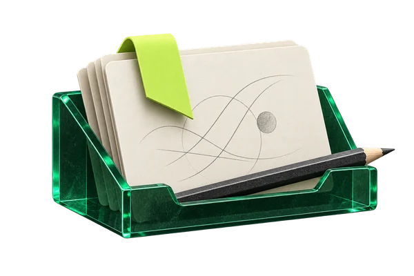

MAŁE KROKI. WIĘCEJ ZROZUMIENIA.

Zrób miejsce
na zrozumienie.
Zaznacz zadanie na stronie.
Wspólnie przejdziemy przez rozwiązanie.
Możesz też użyć ikony OKStudy lub skrótu Alt + O.
Twoje zadania

Nie ma jeszcze zapisanych zadań.
WYJAŚNIENIE
Krok po kroku
Analizuję zadanie…
Układam wyjaśnienie krok po kroku.